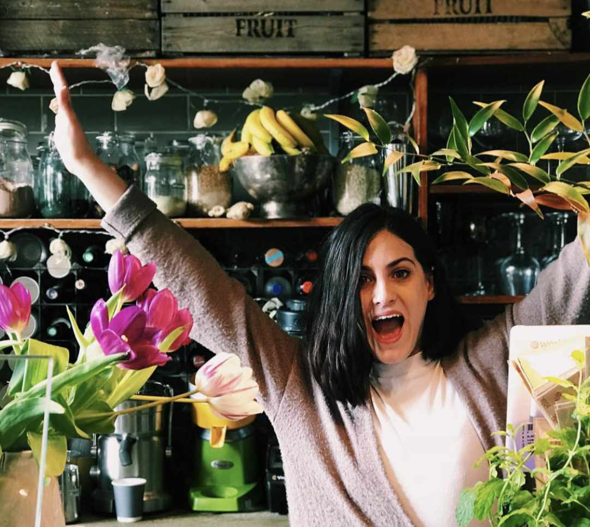
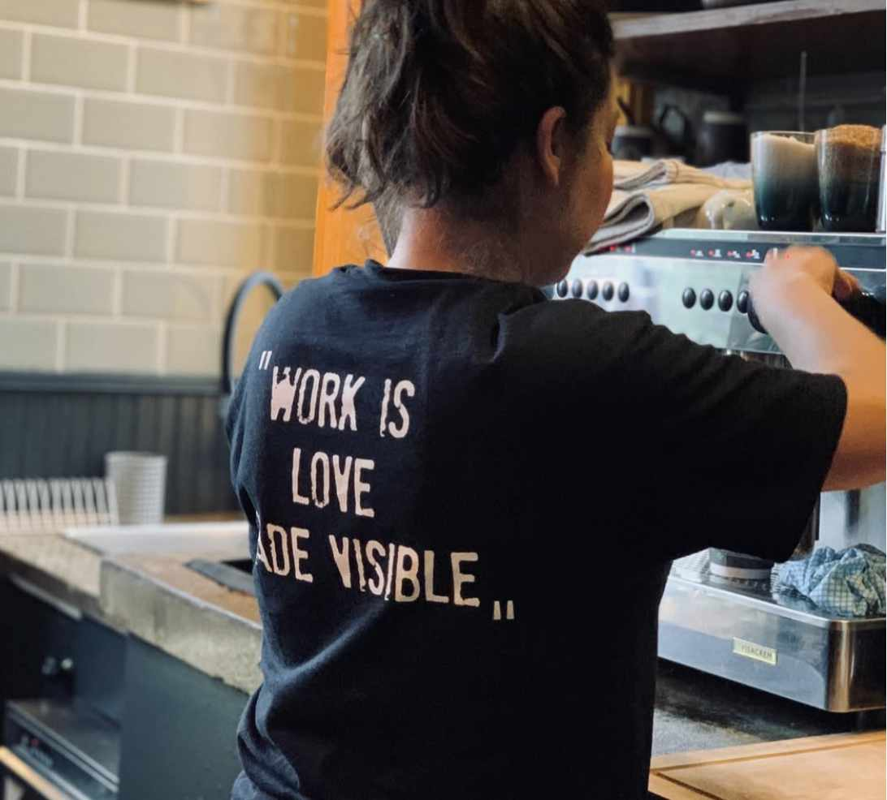
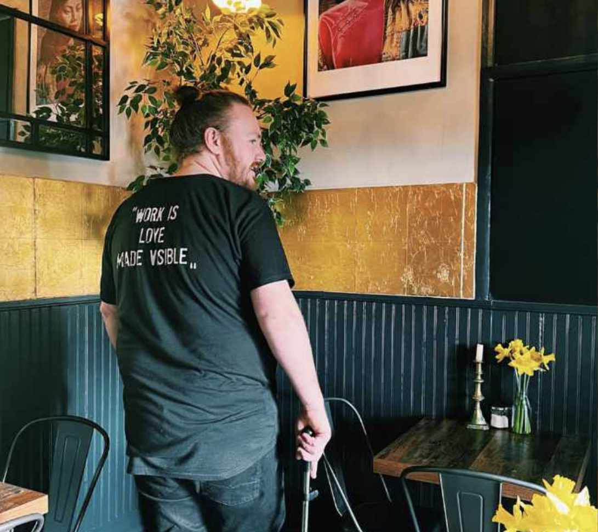
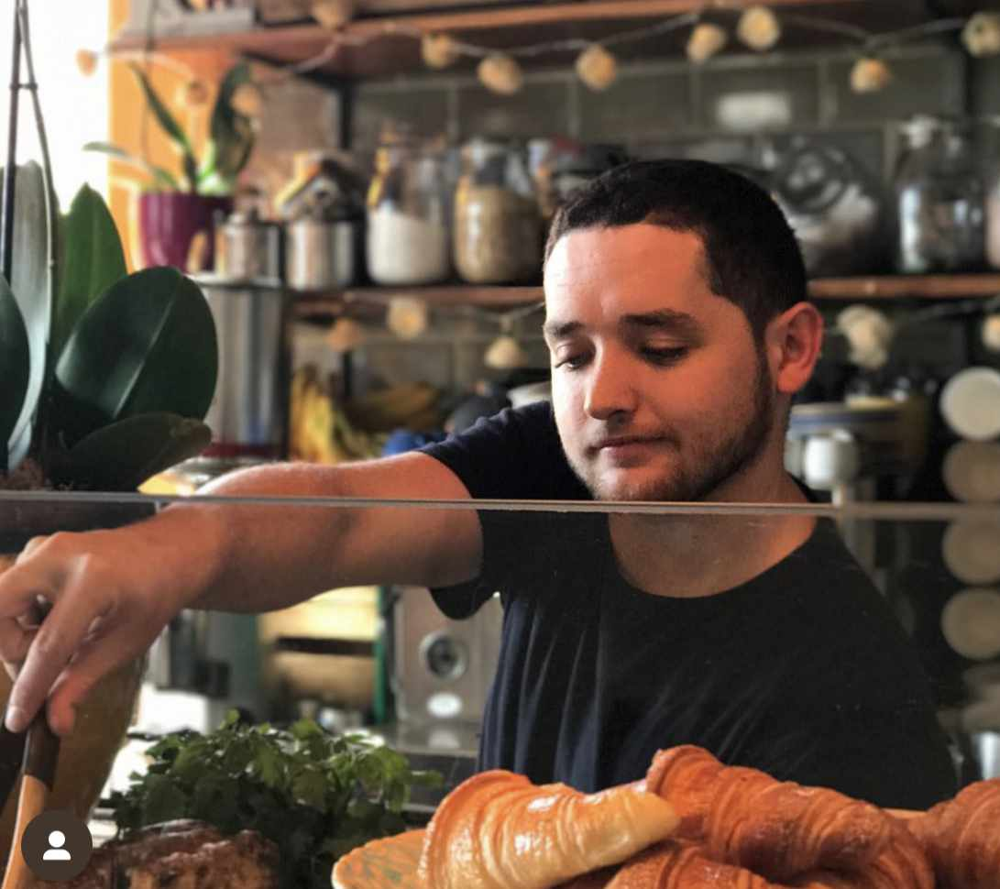
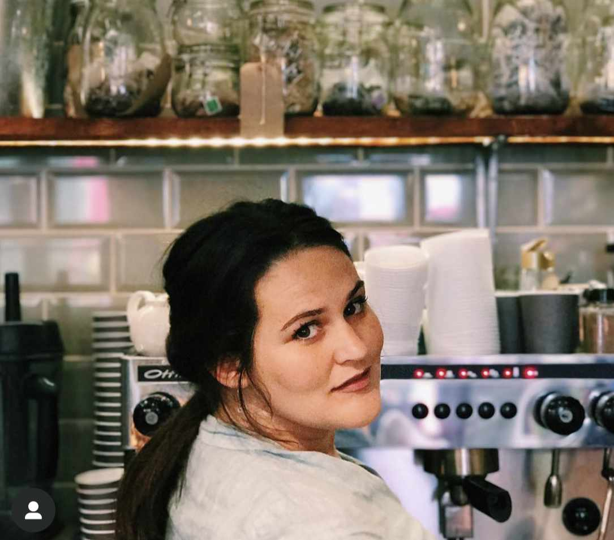

After having a successful flower shop and Thai/Sushi Restaurant back home in Johannesburg, South Africa, Adele, Bonnie & Craig decided to relocate to London and start 'the Yard Café' brand, with its first location in Alexandra Palace Train Station in July 2014. A year later in 2015, They opened another 'The Yard Café' in Palmers Green Train Station.




